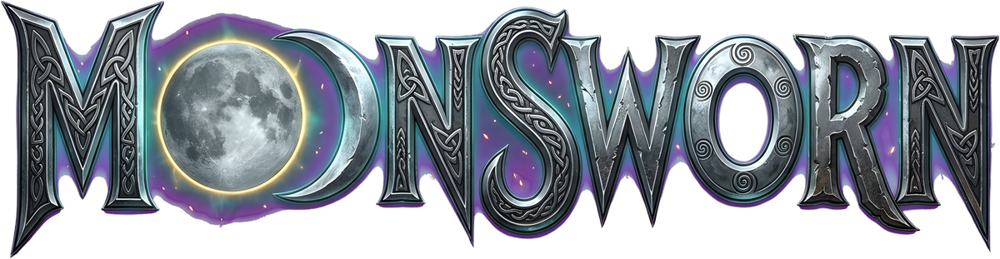
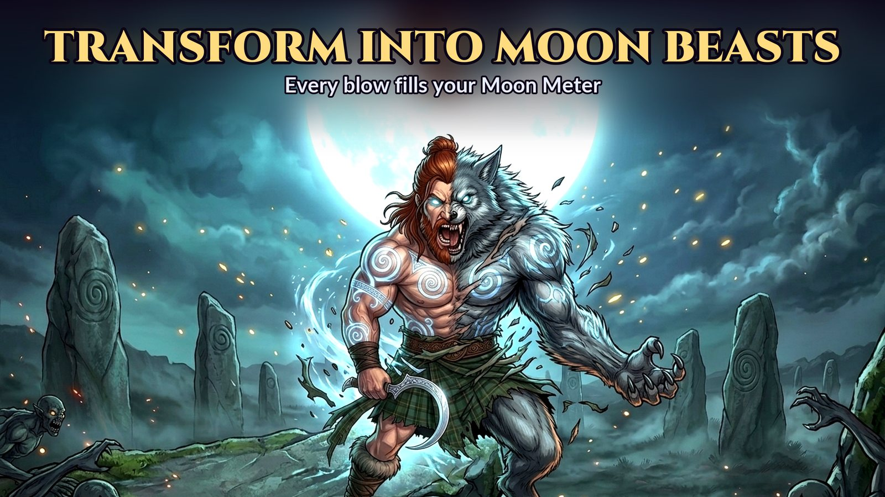
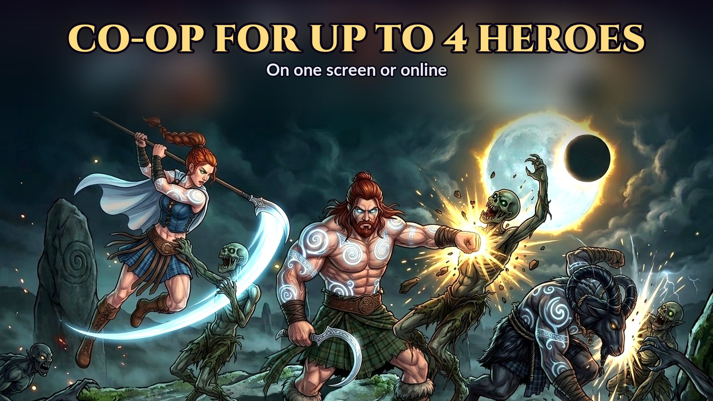
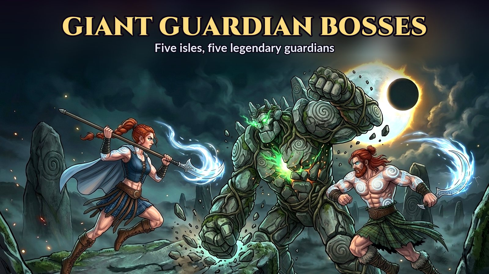
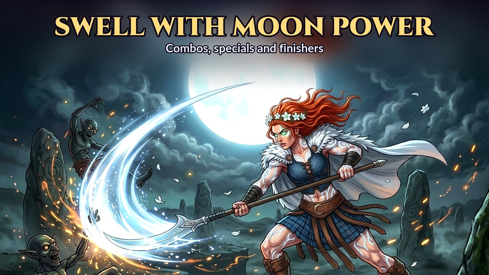
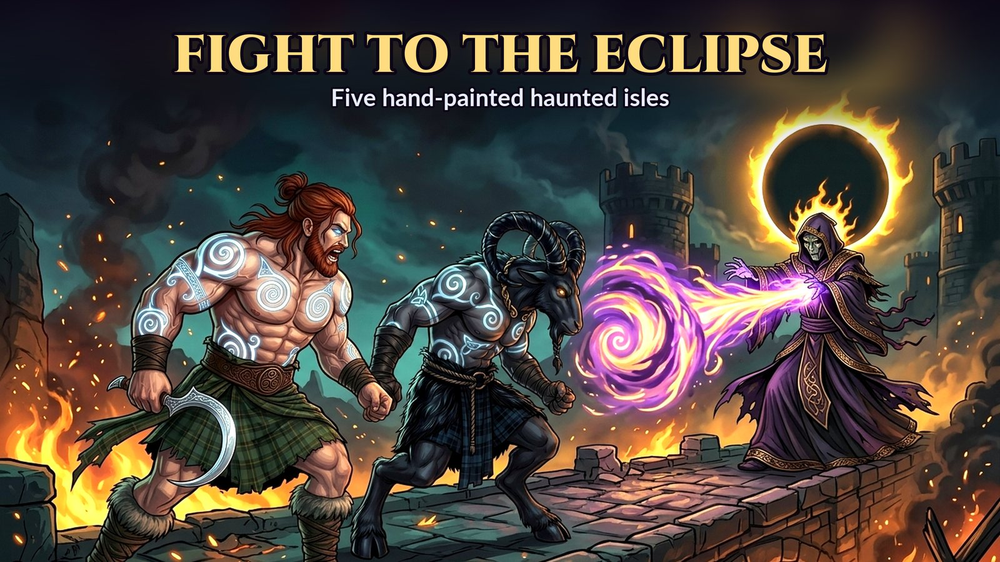
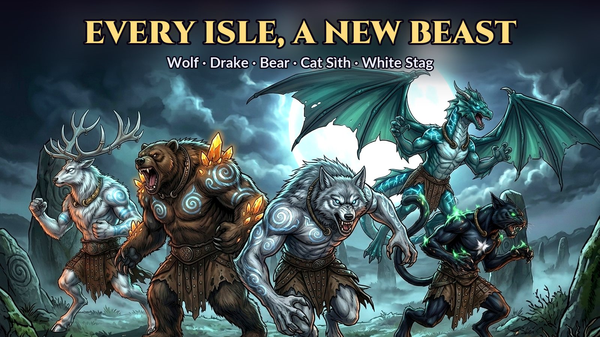
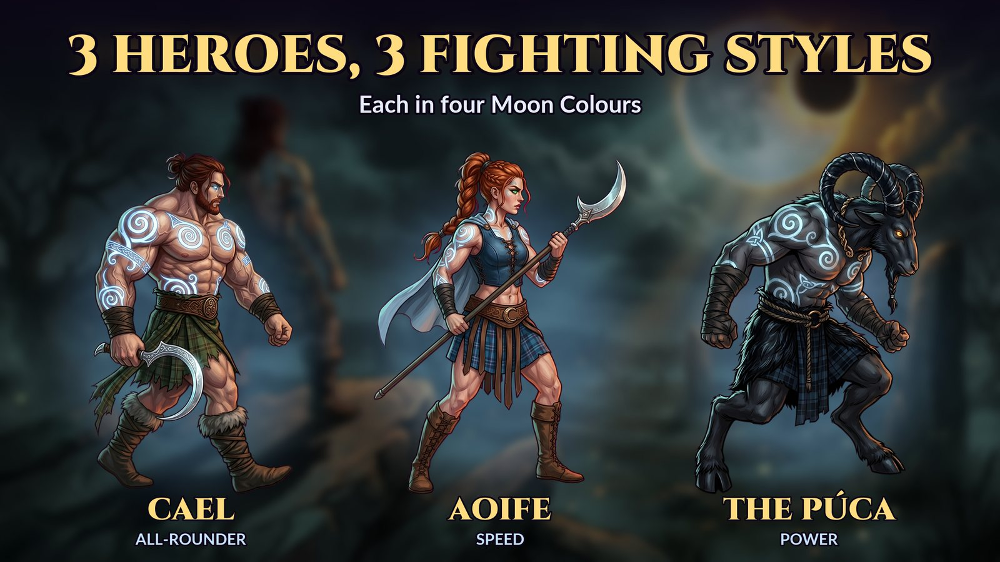

The Celtic myth co-op beat 'em up
A black sun has swallowed the moon. Brawl through five haunted isles, swell with moon-forged muscle, and at Full Moon transform into a legendary beast, alone or with up to four heroes.
Moonsworn at a glance
| What it is | A hand-painted side-scrolling arcade beat 'em up (brawler) based on Celtic mythology |
|---|---|
| Platforms | iPhone and iPad (iOS 17 or later), Android; also macOS and Windows |
| Players | 1 to 4: solo, local co-op on one screen with controllers, or online co-op |
| Heroes | Cael (all-rounder), Aoife (speed and reach), the Púca (power and throws) |
| Beasts | Moon Wolf, Sea Drake, Cave Bear, Cat Sìth and White Stag: a different beast on every isle |
| Isles and bosses | The Barrowmoor (the Cairn King), the Drowned Grottos (the Tide Hag), the Rootdeep (the Hollow Oak), the Sunken Abbey (the Bell Abbess), the Eclipse Citadel (Malvane, the Eclipse Herald) |
| Price | Isle I free; The Full Moon one-time unlock $5.99; no ads, no energy, no loot boxes |
| Controls | Touch controls built for thumbs, or any MFi, Xbox or PlayStation controller |
| Made by | Samuel Gomes, independent developer |
Rise. Hunt. Become.
Shapeshift into moon beasts
Every blow fills the Moon Meter. Bulk up at Crescent and Half Moon, then become the isle's beast at Full Moon, each with its own powers: flight, petrifying roars, ghost-fire, spirit packs and starfall.
Three heroes, three styles
Cael chains combos into finishers, Aoife dances in with her spear and air combos, and the Púca grabs foes and hurls them into the crowd. Every hero has a special move on its own button.
Co-op for up to four
Fight side by side on one screen with game controllers, or host a hunt and play online with friends. Foes, waves and bosses scale with the party.
Five hand-painted isles
Moors of standing stones, drowned grottos, root-choked caverns, a sunken abbey and the Eclipse Citadel, each guarded by a giant boss.
Screenshots







Try it free. Buy it once.
The whole Barrowmoor and its guardian, all three heroes, local co-op.
Isles II to V, every guardian, the ending, and online co-op.
Blood Moon, Silver Moon and Eclipse colourways for every hero.
The Full Moon, Moon Colours and the Supporter's Offering together.
No ads. No energy timers. No loot boxes. Nothing that makes a hero stronger is for sale. Prices in US dollars; your store shows your local price. The Android version is coming to Google Play.
Questions
Is Moonsworn free?
Isle I, the Barrowmoor, is free from start to finish with all three heroes. The Full Moon is a one-time purchase ($5.99 in the US) that unlocks Isles II to V, the ending and online co-op. No ads, energy timers or loot boxes.
Can I play with friends?
Yes: up to 4 players on one screen with game controllers, or online. Online co-op is part of The Full Moon, and every player online needs it.
Does it work offline?
Yes. Solo and local co-op play are fully offline, with no account.
Does it support controllers?
Yes: MFi, Xbox and PlayStation controllers. On phones there are console-style touch controls with punch, kick, jump and special buttons.
Is anything pay-to-win?
No. The extras beyond The Full Moon are cosmetic: Moon Colours and the Supporter's Offering (an art gallery and a title crest).
I bought something on another device. How do I get it back?
Open the MOON SHRINE on the title menu and choose RESTORE PURCHASES, signed in with the same Apple ID or Google account.